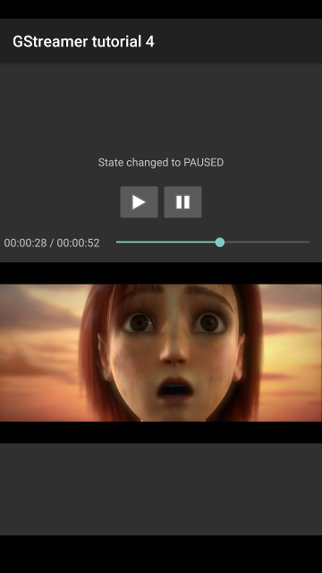

Android tutorial 4: A basic media player
Goal

Enough testing with synthetic images and audio tones! This tutorial finally plays actual media, streamed directly from the Internet, in your Android device. It shows:
- How to keep the User Interface regularly updated with the current playback position and duration
- How to implement a Seek Bar
- How to report the media size to adapt the display surface
It also uses the knowledge gathered in the Basic tutorials regarding:
- How to use
playbinto play any kind of media - How to handle network resilience problems
Introduction
From the previous tutorials, we already have almost all necessary pieces
to build a media player. The most complex part is assembling a pipeline
which retrieves, decodes and displays the media, but we already know
that the playbin element can take care of all that for us. We only
need to replace the manual pipeline we used in
Android tutorial 3: Video with a single-element
playbin pipeline and we are good to go!
However, we can do better than. We will add a Seek Bar, with a moving thumb that will advance as our current position in the media advances. We will also allow the user to drag the thumb, to jump (or seek) to a different position.
And finally, we will make the video surface adapt to the media size, so the video sink is not forced to draw black borders around the clip. This also allows the Android layout to adapt more nicely to the actual media content. You can still force the video surface to have a specific size if you really want to.
A basic media player [Java code]
src/com/gst_sdk_tutorials/tutorial_4/Tutorial4.java
package com.gst_sdk_tutorials.tutorial_4;
import java.text.SimpleDateFormat;
import java.util.Date;
import java.util.TimeZone;
import android.app.Activity;
import android.os.Bundle;
import android.util.Log;
import android.view.SurfaceHolder;
import android.view.SurfaceView;
import android.view.View;
import android.view.View.OnClickListener;
import android.widget.ImageButton;
import android.widget.SeekBar;
import android.widget.SeekBar.OnSeekBarChangeListener;
import android.widget.TextView;
import android.widget.Toast;
import org.freedesktop.gstreamer.GStreamer;
public class Tutorial4 extends Activity implements SurfaceHolder.Callback, OnSeekBarChangeListener {
private native void nativeInit(); // Initialize native code, build pipeline, etc
private native void nativeFinalize(); // Destroy pipeline and shutdown native code
private native void nativeSetUri(String uri); // Set the URI of the media to play
private native void nativePlay(); // Set pipeline to PLAYING
private native void nativeSetPosition(int milliseconds); // Seek to the indicated position, in milliseconds
private native void nativePause(); // Set pipeline to PAUSED
private static native boolean nativeClassInit(); // Initialize native class: cache Method IDs for callbacks
private native void nativeSurfaceInit(Object surface); // A new surface is available
private native void nativeSurfaceFinalize(); // Surface about to be destroyed
private long native_custom_data; // Native code will use this to keep private data
private boolean is_playing_desired; // Whether the user asked to go to PLAYING
private int position; // Current position, reported by native code
private int duration; // Current clip duration, reported by native code
private boolean is_local_media; // Whether this clip is stored locally or is being streamed
private int desired_position; // Position where the users wants to seek to
private String mediaUri; // URI of the clip being played
private final String defaultMediaUri = "https://www.freedesktop.org/software/gstreamer-sdk/data/media/sintel_trailer-368p.ogv";
// Called when the activity is first created.
@Override
public void onCreate(Bundle savedInstanceState)
{
super.onCreate(savedInstanceState);
// Initialize GStreamer and warn if it fails
try {
GStreamer.init(this);
} catch (Exception e) {
Toast.makeText(this, e.getMessage(), Toast.LENGTH_LONG).show();
finish();
return;
}
setContentView(R.layout.main);
ImageButton play = (ImageButton) this.findViewById(R.id.button_play);
play.setOnClickListener(new OnClickListener() {
public void onClick(View v) {
is_playing_desired = true;
nativePlay();
}
});
ImageButton pause = (ImageButton) this.findViewById(R.id.button_stop);
pause.setOnClickListener(new OnClickListener() {
public void onClick(View v) {
is_playing_desired = false;
nativePause();
}
});
SurfaceView sv = (SurfaceView) this.findViewById(R.id.surface_video);
SurfaceHolder sh = sv.getHolder();
sh.addCallback(this);
SeekBar sb = (SeekBar) this.findViewById(R.id.seek_bar);
sb.setOnSeekBarChangeListener(this);
// Retrieve our previous state, or initialize it to default values
if (savedInstanceState != null) {
is_playing_desired = savedInstanceState.getBoolean("playing");
position = savedInstanceState.getInt("position");
duration = savedInstanceState.getInt("duration");
mediaUri = savedInstanceState.getString("mediaUri");
Log.i ("GStreamer", "Activity created with saved state:");
} else {
is_playing_desired = false;
position = duration = 0;
mediaUri = defaultMediaUri;
Log.i ("GStreamer", "Activity created with no saved state:");
}
is_local_media = false;
Log.i ("GStreamer", " playing:" + is_playing_desired + " position:" + position +
" duration: " + duration + " uri: " + mediaUri);
// Start with disabled buttons, until native code is initialized
this.findViewById(R.id.button_play).setEnabled(false);
this.findViewById(R.id.button_stop).setEnabled(false);
nativeInit();
}
protected void onSaveInstanceState (Bundle outState) {
Log.d ("GStreamer", "Saving state, playing:" + is_playing_desired + " position:" + position +
" duration: " + duration + " uri: " + mediaUri);
outState.putBoolean("playing", is_playing_desired);
outState.putInt("position", position);
outState.putInt("duration", duration);
outState.putString("mediaUri", mediaUri);
}
protected void onDestroy() {
nativeFinalize();
super.onDestroy();
}
// Called from native code. This sets the content of the TextView from the UI thread.
private void setMessage(final String message) {
final TextView tv = (TextView) this.findViewById(R.id.textview_message);
runOnUiThread (new Runnable() {
public void run() {
tv.setText(message);
}
});
}
// Set the URI to play, and record whether it is a local or remote file
private void setMediaUri() {
nativeSetUri (mediaUri);
is_local_media = mediaUri.startsWith("file://");
}
// Called from native code. Native code calls this once it has created its pipeline and
// the main loop is running, so it is ready to accept commands.
private void onGStreamerInitialized () {
Log.i ("GStreamer", "GStreamer initialized:");
Log.i ("GStreamer", " playing:" + is_playing_desired + " position:" + position + " uri: " + mediaUri);
// Restore previous playing state
setMediaUri ();
nativeSetPosition (position);
if (is_playing_desired) {
nativePlay();
} else {
nativePause();
}
// Re-enable buttons, now that GStreamer is initialized
final Activity activity = this;
runOnUiThread(new Runnable() {
public void run() {
activity.findViewById(R.id.button_play).setEnabled(true);
activity.findViewById(R.id.button_stop).setEnabled(true);
}
});
}
// The text widget acts as an slave for the seek bar, so it reflects what the seek bar shows, whether
// it is an actual pipeline position or the position the user is currently dragging to.
private void updateTimeWidget () {
final TextView tv = (TextView) this.findViewById(R.id.textview_time);
final SeekBar sb = (SeekBar) this.findViewById(R.id.seek_bar);
final int pos = sb.getProgress();
SimpleDateFormat df = new SimpleDateFormat("HH:mm:ss");
df.setTimeZone(TimeZone.getTimeZone("UTC"));
final String message = df.format(new Date (pos)) + " / " + df.format(new Date (duration));
tv.setText(message);
}
// Called from native code
private void setCurrentPosition(final int position, final int duration) {
final SeekBar sb = (SeekBar) this.findViewById(R.id.seek_bar);
// Ignore position messages from the pipeline if the seek bar is being dragged
if (sb.isPressed()) return;
runOnUiThread (new Runnable() {
public void run() {
sb.setMax(duration);
sb.setProgress(position);
updateTimeWidget();
}
});
this.position = position;
this.duration = duration;
}
static {
System.loadLibrary("gstreamer_android");
System.loadLibrary("tutorial-4");
nativeClassInit();
}
public void surfaceChanged(SurfaceHolder holder, int format, int width,
int height) {
Log.d("GStreamer", "Surface changed to format " + format + " width "
+ width + " height " + height);
nativeSurfaceInit (holder.getSurface());
}
public void surfaceCreated(SurfaceHolder holder) {
Log.d("GStreamer", "Surface created: " + holder.getSurface());
}
public void surfaceDestroyed(SurfaceHolder holder) {
Log.d("GStreamer", "Surface destroyed");
nativeSurfaceFinalize ();
}
// Called from native code when the size of the media changes or is first detected.
// Inform the video surface about the new size and recalculate the layout.
private void onMediaSizeChanged (int width, int height) {
Log.i ("GStreamer", "Media size changed to " + width + "x" + height);
final GStreamerSurfaceView gsv = (GStreamerSurfaceView) this.findViewById(R.id.surface_video);
gsv.media_width = width;
gsv.media_height = height;
runOnUiThread(new Runnable() {
public void run() {
gsv.requestLayout();
}
});
}
// The Seek Bar thumb has moved, either because the user dragged it or we have called setProgress()
public void onProgressChanged(SeekBar sb, int progress, boolean fromUser) {
if (fromUser == false) return;
desired_position = progress;
// If this is a local file, allow scrub seeking, this is, seek as soon as the slider is moved.
if (is_local_media) nativeSetPosition(desired_position);
updateTimeWidget();
}
// The user started dragging the Seek Bar thumb
public void onStartTrackingTouch(SeekBar sb) {
nativePause();
}
// The user released the Seek Bar thumb
public void onStopTrackingTouch(SeekBar sb) {
// If this is a remote file, scrub seeking is probably not going to work smoothly enough.
// Therefore, perform only the seek when the slider is released.
if (!is_local_media) nativeSetPosition(desired_position);
if (is_playing_desired) nativePlay();
}
}
Supporting arbitrary media URIs
The C code provides the nativeSetUri() method so we can indicate the
URI of the media to play. Since playbin will be taking care of
retrieving the media, we can use local or remote URIs indistinctly
(file:// or http://, for example). From Java, though, we want to
keep track of whether the file is local or remote, because we will not
offer the same functionalities. We keep track of this in the
is_local_media variable, and update it every time we change the media
URI:
private void setMediaUri() {
nativeSetUri (mediaUri);
is_local_media = mediaUri.startsWith("file://");
}
We call setMediaUri() in the onGStreamerInitialized() callback, once
the pipeline is ready to accept commands.
Reporting media size
Every time the size of the media changes (which could happen mid-stream,
for some kind of streams), or when it is first detected, C code calls
our onMediaSizeChanged() callback:
private void onMediaSizeChanged (int width, int height) {
Log.i ("GStreamer", "Media size changed to " + width + "x" + height);
final GStreamerSurfaceView gsv = (GStreamerSurfaceView) this.findViewById(R.id.surface_video);
gsv.media_width = width;
gsv.media_height = height;
runOnUiThread(new Runnable() {
public void run() {
gsv.requestLayout();
}
});
}
Here we simply pass the new size onto the GStreamerSurfaceView in
charge of displaying the media, and ask the Android layout to be
recalculated. Eventually, the onMeasure() method in
GStreamerSurfaceView will be called and the new size will be taken
into account. As we have already seen in
Android tutorial 2: A running pipeline, methods which change
the UI must be called from the main thread, and we are now in a
callback from some GStreamer internal thread. Hence, the usage of
runOnUiThread().
Refreshing the Seek Bar
Basic tutorial 5: GUI toolkit integration has already shown how to implement a Seek Bar using the GTK+ toolkit. The implementation on Android is very similar.
The Seek Bar accomplishes to functions: First, it moves on its own to reflect the current playback position in the media. Second, it can be dragged by the user to seek to a different position.
To realize the first function, C code will periodically call our
setCurrentPosition() method so we can update the position of the thumb
in the Seek Bar. Again we do so from the UI thread, using
RunOnUiThread().
private void setCurrentPosition(final int position, final int duration) {
final SeekBar sb = (SeekBar) this.findViewById(R.id.seek_bar);
// Ignore position messages from the pipeline if the seek bar is being dragged
if (sb.isPressed()) return;
runOnUiThread (new Runnable() {
public void run() {
sb.setMax(duration);
sb.setProgress(position);
updateTimeWidget();
}
});
this.position = position;
this.duration = duration;
}
To the left of the Seek Bar (refer to the screenshot at the top of this
page), there is a
TextView
widget which we will use to display the current position and duration in
HH:mm:ss / HH:mm:ss textual format. The updateTimeWidget() method
takes care of it, and must be called every time the Seek Bar is updated:
private void updateTimeWidget () {
final TextView tv = (TextView) this.findViewById(R.id.textview_time);
final SeekBar sb = (SeekBar) this.findViewById(R.id.seek_bar);
final int pos = sb.getProgress();
SimpleDateFormat df = new SimpleDateFormat("HH:mm:ss");
df.setTimeZone(TimeZone.getTimeZone("UTC"));
final String message = df.format(new Date (pos)) + " / " + df.format(new Date (duration));
tv.setText(message);
}
Seeking with the Seek Bar
To perform the second function of the Seek Bar (allowing the user to seek by dragging the thumb), we implement the OnSeekBarChangeListener interface in the Activity:
public class Tutorial4 extends Activity implements SurfaceHolder.Callback, OnSeekBarChangeListener {
And we register the Activity as the listener for the Seek
Bar’s
events in the onCreate() method:
SeekBar sb = (SeekBar) this.findViewById(R.id.seek_bar);
sb.setOnSeekBarChangeListener(this);
We will now be notified of three events: When the user starts dragging the thumb, every time the thumb moves and when the thumb is released by the user:
public void onStartTrackingTouch(SeekBar sb) {
nativePause();
}
onStartTrackingTouch() is called when the user starts dragging, and the only thing we do is pause the pipeline. If the user is searching for a particular scene, we do not want it to keep moving.
public void onProgressChanged(SeekBar sb, int progress, boolean fromUser) {
if (fromUser == false) return;
desired_position = progress;
// If this is a local file, allow scrub seeking, this is, seek soon as the slider is moved.
if (is_local_media) nativeSetPosition(desired_position);
updateTimeWidget();
}
onProgressChanged() is
called every time the thumb moves, be it because the user dragged it, or
because we called setProgress() on the Seek Bar. We discard the latter
case with the handy fromUser parameter.
As the comment says, if this is a local media, we allow scrub seeking, this is, we jump to the indicated position as soon as the thumb moves. Otherwise, the seek will be performed when the thumb is released, and the only thing we do here is update the textual time widget.
public void onStopTrackingTouch(SeekBar sb) {
// If this is a remote file, scrub seeking is probably not going to work smoothly enough.
// Therefore, perform only the seek when the slider is released.
if (!is_local_media) nativeSetPosition(desired_position);
if (is_playing_desired) nativePlay();
}
Finally, onStopTrackingTouch() is called when the thumb is released. We simply perform the seek operation if the file was non-local, and restore the pipeline to the desired playing state.
This concludes the User interface part of this tutorial. Let’s review now the under-the-hood C code that allows this to work.
A basic media player [C code]
jni/tutorial-4.c
#include <string.h>
#include <jni.h>
#include <android/log.h>
#include <android/native_window.h>
#include <android/native_window_jni.h>
#include <gst/gst.h>
#include <gst/interfaces/xoverlay.h>
#include <gst/video/video.h>
#include <pthread.h>
GST_DEBUG_CATEGORY_STATIC (debug_category);
#define GST_CAT_DEFAULT debug_category
/*
* These macros provide a way to store the native pointer to CustomData, which might be 32 or 64 bits, into
* a jlong, which is always 64 bits, without warnings.
*/
#if GLIB_SIZEOF_VOID_P == 8
## define GET_CUSTOM_DATA(env, thiz, fieldID) (CustomData *)(*env)->GetLongField (env, thiz, fieldID)
## define SET_CUSTOM_DATA(env, thiz, fieldID, data) (*env)->SetLongField (env, thiz, fieldID, (jlong)data)
#else
## define GET_CUSTOM_DATA(env, thiz, fieldID) (CustomData *)(jint)(*env)->GetLongField (env, thiz, fieldID)
## define SET_CUSTOM_DATA(env, thiz, fieldID, data) (*env)->SetLongField (env, thiz, fieldID, (jlong)(jint)data)
#endif
/* Do not allow seeks to be performed closer than this distance. It is visually useless, and will probably
* confuse some demuxers. */
#define SEEK_MIN_DELAY (500 * GST_MSECOND)
/* Structure to contain all our information, so we can pass it to callbacks */
typedef struct _CustomData {
jobject app; /* Application instance, used to call its methods. A global reference is kept. */
GstElement *pipeline; /* The running pipeline */
GMainContext *context; /* GLib context used to run the main loop */
GMainLoop *main_loop; /* GLib main loop */
gboolean initialized; /* To avoid informing the UI multiple times about the initialization */
ANativeWindow *native_window; /* The Android native window where video will be rendered */
GstState state; /* Current pipeline state */
GstState target_state; /* Desired pipeline state, to be set once buffering is complete */
gint64 duration; /* Cached clip duration */
gint64 desired_position; /* Position to seek to, once the pipeline is running */
GstClockTime last_seek_time; /* For seeking overflow prevention (throttling) */
gboolean is_live; /* Live streams do not use buffering */
} CustomData;
/* playbin flags */
typedef enum {
GST_PLAY_FLAG_TEXT = (1 << 2) /* We want subtitle output */
} GstPlayFlags;
/* These global variables cache values which are not changing during execution */
static pthread_t gst_app_thread;
static pthread_key_t current_jni_env;
static JavaVM *java_vm;
static jfieldID custom_data_field_id;
static jmethodID set_message_method_id;
static jmethodID set_current_position_method_id;
static jmethodID on_gstreamer_initialized_method_id;
static jmethodID on_media_size_changed_method_id;
/*
* Private methods
*/
/* Register this thread with the VM */
static JNIEnv *attach_current_thread (void) {
JNIEnv *env;
JavaVMAttachArgs args;
GST_DEBUG ("Attaching thread %p", g_thread_self ());
args.version = JNI_VERSION_1_4;
args.name = NULL;
args.group = NULL;
if ((*java_vm)->AttachCurrentThread (java_vm, &env, &args) < 0) {
GST_ERROR ("Failed to attach current thread");
return NULL;
}
return env;
}
/* Unregister this thread from the VM */
static void detach_current_thread (void *env) {
GST_DEBUG ("Detaching thread %p", g_thread_self ());
(*java_vm)->DetachCurrentThread (java_vm);
}
/* Retrieve the JNI environment for this thread */
static JNIEnv *get_jni_env (void) {
JNIEnv *env;
if ((env = pthread_getspecific (current_jni_env)) == NULL) {
env = attach_current_thread ();
pthread_setspecific (current_jni_env, env);
}
return env;
}
/* Change the content of the UI's TextView */
static void set_ui_message (const gchar *message, CustomData *data) {
JNIEnv *env = get_jni_env ();
GST_DEBUG ("Setting message to: %s", message);
jstring jmessage = (*env)->NewStringUTF(env, message);
(*env)->CallVoidMethod (env, data->app, set_message_method_id, jmessage);
if ((*env)->ExceptionCheck (env)) {
GST_ERROR ("Failed to call Java method");
(*env)->ExceptionClear (env);
}
(*env)->DeleteLocalRef (env, jmessage);
}
/* Tell the application what is the current position and clip duration */
static void set_current_ui_position (gint position, gint duration, CustomData *data) {
JNIEnv *env = get_jni_env ();
(*env)->CallVoidMethod (env, data->app, set_current_position_method_id, position, duration);
if ((*env)->ExceptionCheck (env)) {
GST_ERROR ("Failed to call Java method");
(*env)->ExceptionClear (env);
}
}
/* If we have pipeline and it is running, query the current position and clip duration and inform
* the application */
static gboolean refresh_ui (CustomData *data) {
GstFormat fmt = GST_FORMAT_TIME;
gint64 current = -1;
gint64 position;
/* We do not want to update anything unless we have a working pipeline in the PAUSED or PLAYING state */
if (!data || !data->pipeline || data->state < GST_STATE_PAUSED)
return TRUE;
/* If we didn't know it yet, query the stream duration */
if (!GST_CLOCK_TIME_IS_VALID (data->duration)) {
if (!gst_element_query_duration (data->pipeline, &fmt, &data->duration)) {
GST_WARNING ("Could not query current duration");
}
}
if (gst_element_query_position (data->pipeline, &fmt, &position)) {
/* Java expects these values in milliseconds, and GStreamer provides nanoseconds */
set_current_ui_position (position / GST_MSECOND, data->duration / GST_MSECOND, data);
}
return TRUE;
}
/* Forward declaration for the delayed seek callback */
static gboolean delayed_seek_cb (CustomData *data);
/* Perform seek, if we are not too close to the previous seek. Otherwise, schedule the seek for
* some time in the future. */
static void execute_seek (gint64 desired_position, CustomData *data) {
gint64 diff;
if (desired_position == GST_CLOCK_TIME_NONE)
return;
diff = gst_util_get_timestamp () - data->last_seek_time;
if (GST_CLOCK_TIME_IS_VALID (data->last_seek_time) && diff < SEEK_MIN_DELAY) {
/* The previous seek was too close, delay this one */
GSource *timeout_source;
if (data->desired_position == GST_CLOCK_TIME_NONE) {
/* There was no previous seek scheduled. Setup a timer for some time in the future */
timeout_source = g_timeout_source_new ((SEEK_MIN_DELAY - diff) / GST_MSECOND);
g_source_set_callback (timeout_source, (GSourceFunc)delayed_seek_cb, data, NULL);
g_source_attach (timeout_source, data->context);
g_source_unref (timeout_source);
}
/* Update the desired seek position. If multiple requests are received before it is time
* to perform a seek, only the last one is remembered. */
data->desired_position = desired_position;
GST_DEBUG ("Throttling seek to %" GST_TIME_FORMAT ", will be in %" GST_TIME_FORMAT,
GST_TIME_ARGS (desired_position), GST_TIME_ARGS (SEEK_MIN_DELAY - diff));
} else {
/* Perform the seek now */
GST_DEBUG ("Seeking to %" GST_TIME_FORMAT, GST_TIME_ARGS (desired_position));
data->last_seek_time = gst_util_get_timestamp ();
gst_element_seek_simple (data->pipeline, GST_FORMAT_TIME, GST_SEEK_FLAG_FLUSH | GST_SEEK_FLAG_KEY_UNIT, desired_position);
data->desired_position = GST_CLOCK_TIME_NONE;
}
}
/* Delayed seek callback. This gets called by the timer setup in the above function. */
static gboolean delayed_seek_cb (CustomData *data) {
GST_DEBUG ("Doing delayed seek to %" GST_TIME_FORMAT, GST_TIME_ARGS (data->desired_position));
execute_seek (data->desired_position, data);
return FALSE;
}
/* Retrieve errors from the bus and show them on the UI */
static void error_cb (GstBus *bus, GstMessage *msg, CustomData *data) {
GError *err;
gchar *debug_info;
gchar *message_string;
gst_message_parse_error (msg, &err, &debug_info);
message_string = g_strdup_printf ("Error received from element %s: %s", GST_OBJECT_NAME (msg->src), err->message);
g_clear_error (&err);
g_free (debug_info);
set_ui_message (message_string, data);
g_free (message_string);
data->target_state = GST_STATE_NULL;
gst_element_set_state (data->pipeline, GST_STATE_NULL);
}
/* Called when the End Of the Stream is reached. Just move to the beginning of the media and pause. */
static void eos_cb (GstBus *bus, GstMessage *msg, CustomData *data) {
data->target_state = GST_STATE_PAUSED;
data->is_live = (gst_element_set_state (data->pipeline, GST_STATE_PAUSED) == GST_STATE_CHANGE_NO_PREROLL);
execute_seek (0, data);
}
/* Called when the duration of the media changes. Just mark it as unknown, so we re-query it in the next UI refresh. */
static void duration_cb (GstBus *bus, GstMessage *msg, CustomData *data) {
data->duration = GST_CLOCK_TIME_NONE;
}
/* Called when buffering messages are received. We inform the UI about the current buffering level and
* keep the pipeline paused until 100% buffering is reached. At that point, set the desired state. */
static void buffering_cb (GstBus *bus, GstMessage *msg, CustomData *data) {
gint percent;
if (data->is_live)
return;
gst_message_parse_buffering (msg, &percent);
if (percent < 100 && data->target_state >= GST_STATE_PAUSED) {
gchar * message_string = g_strdup_printf ("Buffering %d%%", percent);
gst_element_set_state (data->pipeline, GST_STATE_PAUSED);
set_ui_message (message_string, data);
g_free (message_string);
} else if (data->target_state >= GST_STATE_PLAYING) {
gst_element_set_state (data->pipeline, GST_STATE_PLAYING);
} else if (data->target_state >= GST_STATE_PAUSED) {
set_ui_message ("Buffering complete", data);
}
}
/* Called when the clock is lost */
static void clock_lost_cb (GstBus *bus, GstMessage *msg, CustomData *data) {
if (data->target_state >= GST_STATE_PLAYING) {
gst_element_set_state (data->pipeline, GST_STATE_PAUSED);
gst_element_set_state (data->pipeline, GST_STATE_PLAYING);
}
}
/* Retrieve the video sink's Caps and tell the application about the media size */
static void check_media_size (CustomData *data) {
JNIEnv *env = get_jni_env ();
GstElement *video_sink;
GstPad *video_sink_pad;
GstCaps *caps;
GstVideoFormat fmt;
int width;
int height;
/* Retrieve the Caps at the entrance of the video sink */
g_object_get (data->pipeline, "video-sink", &video_sink, NULL);
video_sink_pad = gst_element_get_static_pad (video_sink, "sink");
caps = gst_pad_get_negotiated_caps (video_sink_pad);
if (gst_video_format_parse_caps(caps, &fmt, &width, &height)) {
int par_n, par_d;
if (gst_video_parse_caps_pixel_aspect_ratio (caps, &par_n, &par_d)) {
width = width * par_n / par_d;
}
GST_DEBUG ("Media size is %dx%d, notifying application", width, height);
(*env)->CallVoidMethod (env, data->app, on_media_size_changed_method_id, (jint)width, (jint)height);
if ((*env)->ExceptionCheck (env)) {
GST_ERROR ("Failed to call Java method");
(*env)->ExceptionClear (env);
}
}
gst_caps_unref(caps);
gst_object_unref (video_sink_pad);
gst_object_unref(video_sink);
}
/* Notify UI about pipeline state changes */
static void state_changed_cb (GstBus *bus, GstMessage *msg, CustomData *data) {
GstState old_state, new_state, pending_state;
gst_message_parse_state_changed (msg, &old_state, &new_state, &pending_state);
/* Only pay attention to messages coming from the pipeline, not its children */
if (GST_MESSAGE_SRC (msg) == GST_OBJECT (data->pipeline)) {
data->state = new_state;
gchar *message = g_strdup_printf("State changed to %s", gst_element_state_get_name(new_state));
set_ui_message(message, data);
g_free (message);
/* The Ready to Paused state change is particularly interesting: */
if (old_state == GST_STATE_READY && new_state == GST_STATE_PAUSED) {
/* By now the sink already knows the media size */
check_media_size(data);
/* If there was a scheduled seek, perform it now that we have moved to the Paused state */
if (GST_CLOCK_TIME_IS_VALID (data->desired_position))
execute_seek (data->desired_position, data);
}
}
}
/* Check if all conditions are met to report GStreamer as initialized.
* These conditions will change depending on the application */
static void check_initialization_complete (CustomData *data) {
JNIEnv *env = get_jni_env ();
if (!data->initialized && data->native_window && data->main_loop) {
GST_DEBUG ("Initialization complete, notifying application. native_window:%p main_loop:%p", data->native_window, data->main_loop);
/* The main loop is running and we received a native window, inform the sink about it */
gst_x_overlay_set_window_handle (GST_X_OVERLAY (data->pipeline), (guintptr)data->native_window);
(*env)->CallVoidMethod (env, data->app, on_gstreamer_initialized_method_id);
if ((*env)->ExceptionCheck (env)) {
GST_ERROR ("Failed to call Java method");
(*env)->ExceptionClear (env);
}
data->initialized = TRUE;
}
}
/* Main method for the native code. This is executed on its own thread. */
static void *app_function (void *userdata) {
JavaVMAttachArgs args;
GstBus *bus;
CustomData *data = (CustomData *)userdata;
GSource *timeout_source;
GSource *bus_source;
GError *error = NULL;
guint flags;
GST_DEBUG ("Creating pipeline in CustomData at %p", data);
/* Create our own GLib Main Context and make it the default one */
data->context = g_main_context_new ();
g_main_context_push_thread_default(data->context);
/* Build pipeline */
data->pipeline = gst_parse_launch("playbin", &error);
if (error) {
gchar *message = g_strdup_printf("Unable to build pipeline: %s", error->message);
g_clear_error (&error);
set_ui_message(message, data);
g_free (message);
return NULL;
}
/* Disable subtitles */
g_object_get (data->pipeline, "flags", &flags, NULL);
flags &= ~GST_PLAY_FLAG_TEXT;
g_object_set (data->pipeline, "flags", flags, NULL);
/* Set the pipeline to READY, so it can already accept a window handle, if we have one */
data->target_state = GST_STATE_READY;
gst_element_set_state(data->pipeline, GST_STATE_READY);
/* Instruct the bus to emit signals for each received message, and connect to the interesting signals */
bus = gst_element_get_bus (data->pipeline);
bus_source = gst_bus_create_watch (bus);
g_source_set_callback (bus_source, (GSourceFunc) gst_bus_async_signal_func, NULL, NULL);
g_source_attach (bus_source, data->context);
g_source_unref (bus_source);
g_signal_connect (G_OBJECT (bus), "message::error", (GCallback)error_cb, data);
g_signal_connect (G_OBJECT (bus), "message::eos", (GCallback)eos_cb, data);
g_signal_connect (G_OBJECT (bus), "message::state-changed", (GCallback)state_changed_cb, data);
g_signal_connect (G_OBJECT (bus), "message::duration", (GCallback)duration_cb, data);
g_signal_connect (G_OBJECT (bus), "message::buffering", (GCallback)buffering_cb, data);
g_signal_connect (G_OBJECT (bus), "message::clock-lost", (GCallback)clock_lost_cb, data);
gst_object_unref (bus);
/* Register a function that GLib will call 4 times per second */
timeout_source = g_timeout_source_new (250);
g_source_set_callback (timeout_source, (GSourceFunc)refresh_ui, data, NULL);
g_source_attach (timeout_source, data->context);
g_source_unref (timeout_source);
/* Create a GLib Main Loop and set it to run */
GST_DEBUG ("Entering main loop... (CustomData:%p)", data);
data->main_loop = g_main_loop_new (data->context, FALSE);
check_initialization_complete (data);
g_main_loop_run (data->main_loop);
GST_DEBUG ("Exited main loop");
g_main_loop_unref (data->main_loop);
data->main_loop = NULL;
/* Free resources */
g_main_context_pop_thread_default(data->context);
g_main_context_unref (data->context);
data->target_state = GST_STATE_NULL;
gst_element_set_state (data->pipeline, GST_STATE_NULL);
gst_object_unref (data->pipeline);
return NULL;
}
/*
* Java Bindings
*/
/* Instruct the native code to create its internal data structure, pipeline and thread */
static void gst_native_init (JNIEnv* env, jobject thiz) {
CustomData *data = g_new0 (CustomData, 1);
data->desired_position = GST_CLOCK_TIME_NONE;
data->last_seek_time = GST_CLOCK_TIME_NONE;
SET_CUSTOM_DATA (env, thiz, custom_data_field_id, data);
GST_DEBUG_CATEGORY_INIT (debug_category, "tutorial-4", 0, "Android tutorial 4");
gst_debug_set_threshold_for_name("tutorial-4", GST_LEVEL_DEBUG);
GST_DEBUG ("Created CustomData at %p", data);
data->app = (*env)->NewGlobalRef (env, thiz);
GST_DEBUG ("Created GlobalRef for app object at %p", data->app);
pthread_create (&gst_app_thread, NULL, &app_function, data);
}
/* Quit the main loop, remove the native thread and free resources */
static void gst_native_finalize (JNIEnv* env, jobject thiz) {
CustomData *data = GET_CUSTOM_DATA (env, thiz, custom_data_field_id);
if (!data) return;
GST_DEBUG ("Quitting main loop...");
g_main_loop_quit (data->main_loop);
GST_DEBUG ("Waiting for thread to finish...");
pthread_join (gst_app_thread, NULL);
GST_DEBUG ("Deleting GlobalRef for app object at %p", data->app);
(*env)->DeleteGlobalRef (env, data->app);
GST_DEBUG ("Freeing CustomData at %p", data);
g_free (data);
SET_CUSTOM_DATA (env, thiz, custom_data_field_id, NULL);
GST_DEBUG ("Done finalizing");
}
/* Set playbin's URI */
void gst_native_set_uri (JNIEnv* env, jobject thiz, jstring uri) {
CustomData *data = GET_CUSTOM_DATA (env, thiz, custom_data_field_id);
if (!data || !data->pipeline) return;
const jbyte *char_uri = (*env)->GetStringUTFChars (env, uri, NULL);
GST_DEBUG ("Setting URI to %s", char_uri);
if (data->target_state >= GST_STATE_READY)
gst_element_set_state (data->pipeline, GST_STATE_READY);
g_object_set(data->pipeline, "uri", char_uri, NULL);
(*env)->ReleaseStringUTFChars (env, uri, char_uri);
data->duration = GST_CLOCK_TIME_NONE;
data->is_live = (gst_element_set_state (data->pipeline, data->target_state) == GST_STATE_CHANGE_NO_PREROLL);
}
/* Set pipeline to PLAYING state */
static void gst_native_play (JNIEnv* env, jobject thiz) {
CustomData *data = GET_CUSTOM_DATA (env, thiz, custom_data_field_id);
if (!data) return;
GST_DEBUG ("Setting state to PLAYING");
data->target_state = GST_STATE_PLAYING;
data->is_live = (gst_element_set_state (data->pipeline, GST_STATE_PLAYING) == GST_STATE_CHANGE_NO_PREROLL);
}
/* Set pipeline to PAUSED state */
static void gst_native_pause (JNIEnv* env, jobject thiz) {
CustomData *data = GET_CUSTOM_DATA (env, thiz, custom_data_field_id);
if (!data) return;
GST_DEBUG ("Setting state to PAUSED");
data->target_state = GST_STATE_PAUSED;
data->is_live = (gst_element_set_state (data->pipeline, GST_STATE_PAUSED) == GST_STATE_CHANGE_NO_PREROLL);
}
/* Instruct the pipeline to seek to a different position */
void gst_native_set_position (JNIEnv* env, jobject thiz, int milliseconds) {
CustomData *data = GET_CUSTOM_DATA (env, thiz, custom_data_field_id);
if (!data) return;
gint64 desired_position = (gint64)(milliseconds * GST_MSECOND);
if (data->state >= GST_STATE_PAUSED) {
execute_seek(desired_position, data);
} else {
GST_DEBUG ("Scheduling seek to %" GST_TIME_FORMAT " for later", GST_TIME_ARGS (desired_position));
data->desired_position = desired_position;
}
}
/* Static class initializer: retrieve method and field IDs */
static jboolean gst_native_class_init (JNIEnv* env, jclass klass) {
custom_data_field_id = (*env)->GetFieldID (env, klass, "native_custom_data", "J");
set_message_method_id = (*env)->GetMethodID (env, klass, "setMessage", "(Ljava/lang/String;)V");
set_current_position_method_id = (*env)->GetMethodID (env, klass, "setCurrentPosition", "(II)V");
on_gstreamer_initialized_method_id = (*env)->GetMethodID (env, klass, "onGStreamerInitialized", "()V");
on_media_size_changed_method_id = (*env)->GetMethodID (env, klass, "onMediaSizeChanged", "(II)V");
if (!custom_data_field_id || !set_message_method_id || !on_gstreamer_initialized_method_id ||
!on_media_size_changed_method_id || !set_current_position_method_id) {
/* We emit this message through the Android log instead of the GStreamer log because the later
* has not been initialized yet.
*/
__android_log_print (ANDROID_LOG_ERROR, "tutorial-4", "The calling class does not implement all necessary interface methods");
return JNI_FALSE;
}
return JNI_TRUE;
}
static void gst_native_surface_init (JNIEnv *env, jobject thiz, jobject surface) {
CustomData *data = GET_CUSTOM_DATA (env, thiz, custom_data_field_id);
if (!data) return;
ANativeWindow *new_native_window = ANativeWindow_fromSurface(env, surface);
GST_DEBUG ("Received surface %p (native window %p)", surface, new_native_window);
if (data->native_window) {
ANativeWindow_release (data->native_window);
if (data->native_window == new_native_window) {
GST_DEBUG ("New native window is the same as the previous one", data->native_window);
if (data->pipeline) {
gst_x_overlay_expose(GST_X_OVERLAY (data->pipeline));
gst_x_overlay_expose(GST_X_OVERLAY (data->pipeline));
}
return;
} else {
GST_DEBUG ("Released previous native window %p", data->native_window);
data->initialized = FALSE;
}
}
data->native_window = new_native_window;
check_initialization_complete (data);
}
static void gst_native_surface_finalize (JNIEnv *env, jobject thiz) {
CustomData *data = GET_CUSTOM_DATA (env, thiz, custom_data_field_id);
if (!data) return;
GST_DEBUG ("Releasing Native Window %p", data->native_window);
if (data->pipeline) {
gst_x_overlay_set_window_handle (GST_X_OVERLAY (data->pipeline), (guintptr)NULL);
gst_element_set_state (data->pipeline, GST_STATE_READY);
}
ANativeWindow_release (data->native_window);
data->native_window = NULL;
data->initialized = FALSE;
}
/* List of implemented native methods */
static JNINativeMethod native_methods[] = {
{ "nativeInit", "()V", (void *) gst_native_init},
{ "nativeFinalize", "()V", (void *) gst_native_finalize},
{ "nativeSetUri", "(Ljava/lang/String;)V", (void *) gst_native_set_uri},
{ "nativePlay", "()V", (void *) gst_native_play},
{ "nativePause", "()V", (void *) gst_native_pause},
{ "nativeSetPosition", "(I)V", (void*) gst_native_set_position},
{ "nativeSurfaceInit", "(Ljava/lang/Object;)V", (void *) gst_native_surface_init},
{ "nativeSurfaceFinalize", "()V", (void *) gst_native_surface_finalize},
{ "nativeClassInit", "()Z", (void *) gst_native_class_init}
};
/* Library initializer */
jint JNI_OnLoad(JavaVM *vm, void *reserved) {
JNIEnv *env = NULL;
java_vm = vm;
if ((*vm)->GetEnv(vm, (void**) &env, JNI_VERSION_1_4) != JNI_OK) {
__android_log_print (ANDROID_LOG_ERROR, "tutorial-4", "Could not retrieve JNIEnv");
return 0;
}
jclass klass = (*env)->FindClass (env, "com/gst_sdk_tutorials/tutorial_4/Tutorial4");
(*env)->RegisterNatives (env, klass, native_methods, G_N_ELEMENTS(native_methods));
pthread_key_create (¤t_jni_env, detach_current_thread);
return JNI_VERSION_1_4;
}
Supporting arbitrary media URIs
Java code will call gst_native_set_uri() whenever it wants to change
the playing URI (in this tutorial the URI never changes, but it could):
void gst_native_set_uri (JNIEnv* env, jobject thiz, jstring uri) {
CustomData *data = GET_CUSTOM_DATA (env, thiz, custom_data_field_id);
if (!data || !data->pipeline) return;
const jbyte *char_uri = (*env)->GetStringUTFChars (env, uri, NULL);
GST_DEBUG ("Setting URI to %s", char_uri);
if (data->target_state >= GST_STATE_READY)
gst_element_set_state (data->pipeline, GST_STATE_READY);
g_object_set(data->pipeline, "uri", char_uri, NULL);
(*env)->ReleaseStringUTFChars (env, uri, char_uri);
data->duration = GST_CLOCK_TIME_NONE;
data->is_live = (gst_element_set_state (data->pipeline, data->target_state) == GST_STATE_CHANGE_NO_PREROLL);
}
We first need to convert between the UTF16 encoding used by Java and the Modified UTF8 used by GStreamer with GetStringUTFChars() and ReleaseStringUTFChars().
playbin will only care about URI changes in the READY to PAUSED state
change, because the new URI might need a completely different playback
pipeline (think about switching from a local Matroska file to a remote
OGG file: this would require, at least, different source and demuxing
elements). Thus, before passing the new URI to playbin we set its
state to READY (if we were in PAUSED or PLAYING).
playbin’s URI is exposed as a common GObject property, so we simply
set it with g_object_set().
We then reset the clip duration, so it is re-queried later, and bring
the pipeline to the playing state it had before. In this last step, we
also take note of whether the new URI corresponds to a live source or
not. Live sources must not use buffering (otherwise latency is
introduced which is inacceptable for them), so we keep track of this
information in the is_live variable.
Reporting media size
Some codecs allow the media size (width and height of the video) to
change during playback. For simplicity, this tutorial assumes that they
do not. Therefore, in the READY to PAUSED state change, once the Caps of
the decoded media are known, we inspect them in check_media_size():
static void check_media_size (CustomData *data) {
JNIEnv *env = get_jni_env ();
GstElement *video_sink;
GstPad *video_sink_pad;
GstCaps *caps;
GstVideoFormat fmt;
int width;
int height;
/* Retrieve the Caps at the entrance of the video sink */
g_object_get (data->pipeline, "video-sink", &video_sink, NULL);
video_sink_pad = gst_element_get_static_pad (video_sink, "sink");
caps = gst_pad_get_negotiated_caps (video_sink_pad);
if (gst_video_format_parse_caps(caps, &fmt, &width, &height)) {
int par_n, par_d;
if (gst_video_parse_caps_pixel_aspect_ratio (caps, &par_n, &par_d)) {
width = width * par_n / par_d;
}
GST_DEBUG ("Media size is %dx%d, notifying application", width, height);
(*env)->CallVoidMethod (env, data->app, on_media_size_changed_method_id, (jint)width, (jint)height);
if ((*env)->ExceptionCheck (env)) {
GST_ERROR ("Failed to call Java method");
(*env)->ExceptionClear (env);
}
}
gst_caps_unref(caps);
gst_object_unref (video_sink_pad);
gst_object_unref(video_sink);
}
We first retrieve the video sink element from the pipeline, using the
video-sink property of playbin, and then its sink Pad. The
negotiated Caps of this Pad, which we recover using
gst_pad_get_negotiated_caps(), are the Caps of the decoded media.
The helper functions gst_video_format_parse_caps() and
gst_video_parse_caps_pixel_aspect_ratio() turn the Caps into
manageable integers, which we pass to Java through
its onMediaSizeChanged() callback.
Refreshing the Seek Bar
To keep the UI updated, a GLib timer is installed in the
app_function() that fires 4 times per second (or every 250ms), right
before entering the main loop:
timeout_source = g_timeout_source_new (250);
g_source_set_callback (timeout_source, (GSourceFunc)refresh_ui, data, NULL);
g_source_attach (timeout_source, data->context);
g_source_unref (timeout_source);
Then, in the refresh_ui method:
static gboolean refresh_ui (CustomData *data) {
GstFormat fmt = GST_FORMAT_TIME;
gint64 current = -1;
gint64 position;
/* We do not want to update anything unless we have a working pipeline in the PAUSED or PLAYING state */
if (!data || !data->pipeline || data->state < GST_STATE_PAUSED)
return TRUE;
/* If we didn't know it yet, query the stream duration */
if (!GST_CLOCK_TIME_IS_VALID (data->duration)) {
if (!gst_element_query_duration (data->pipeline, &fmt, &data->duration)) {
GST_WARNING ("Could not query current duration");
}
}
if (gst_element_query_position (data->pipeline, &fmt, &position)) {
/* Java expects these values in milliseconds, and GStreamer provides nanoseconds */
set_current_ui_position (position / GST_MSECOND, data->duration / GST_MSECOND, data);
}
return TRUE;
}
If it is unknown, the clip duration is retrieved, as explained in
Basic tutorial 4: Time management. The current position is
retrieved next, and the UI is informed of both through its
setCurrentPosition() callback.
Bear in mind that all time-related measures returned by GStreamer are in nanoseconds, whereas, for simplicity, we decided to make the UI code work in milliseconds.
Seeking with the Seek Bar
The Java UI code already takes care of most of the complexity of seeking
by dragging the thumb of the Seek Bar. From C code, we just need to
honor the calls to nativeSetPosition() and instruct the pipeline to
jump to the indicated position.
There are, though, a couple of caveats. Firstly, seeks are only possible when the pipeline is in the PAUSED or PLAYING state, and we might receive seek requests before that happens. Secondly, dragging the Seek Bar can generate a very high number of seek requests in a short period of time, which is visually useless and will impair responsiveness. Let’s see how to overcome these problems.
Delayed seeks
In
gst_native_set_position():
void gst_native_set_position (JNIEnv* env, jobject thiz, int milliseconds) {
CustomData *data = GET_CUSTOM_DATA (env, thiz, custom_data_field_id);
if (!data) return;
gint64 desired_position = (gint64)(milliseconds * GST_MSECOND);
if (data->state >= GST_STATE_PAUSED) {
execute_seek(desired_position, data);
} else {
GST_DEBUG ("Scheduling seek to %" GST_TIME_FORMAT " for later", GST_TIME_ARGS (desired_position));
data->desired_position = desired_position;
}
}
If we are already in the correct state for seeking, execute it right
away; otherwise, store the desired position in the
desired_position variable. Then, in the
state_changed_cb() callback:
if (old_state == GST_STATE_READY && new_state == GST_STATE_PAUSED) {
/* By now the sink already knows the media size */
check_media_size(data);
/* If there was a scheduled seek, perform it now that we have moved to the Paused state */
if (GST_CLOCK_TIME_IS_VALID (data->desired_position))
execute_seek (data->desired_position, data);
}
}
Once the pipeline moves from the READY to the PAUSED state, we check if
there is a pending seek operation and execute it. The
desired_position variable is reset inside execute_seek().
Seek throttling
A seek is potentially a lengthy operation. The demuxer (the element typically in charge of seeking) needs to estimate the appropriate byte offset inside the media file that corresponds to the time position to jump to. Then, it needs to start decoding from that point until the desired position is reached. If the initial estimate is accurate, this will not take long, but, on some container formats, or when indexing information is missing, it can take up to several seconds.
If a demuxer is in the process of performing a seek and receives a second one, it is up to it to finish the first one, start the second one or abort both, which is a bad thing. A simple method to avoid this issue is throttling, which means that we will only allow one seek every half a second (for example): after performing a seek, only the last seek request received during the next 500ms is stored, and will be honored once this period elapses.
To achieve this, all seek requests are routed through the
execute_seek() method:
static void execute_seek (gint64 desired_position, CustomData *data) {
gint64 diff;
if (desired_position == GST_CLOCK_TIME_NONE)
return;
diff = gst_util_get_timestamp () - data->last_seek_time;
if (GST_CLOCK_TIME_IS_VALID (data->last_seek_time) && diff < SEEK_MIN_DELAY) {
/* The previous seek was too close, delay this one */
GSource *timeout_source;
if (data->desired_position == GST_CLOCK_TIME_NONE) {
/* There was no previous seek scheduled. Setup a timer for some time in the future */
timeout_source = g_timeout_source_new ((SEEK_MIN_DELAY - diff) / GST_MSECOND);
g_source_set_callback (timeout_source, (GSourceFunc)delayed_seek_cb, data, NULL);
g_source_attach (timeout_source, data->context);
g_source_unref (timeout_source);
}
/* Update the desired seek position. If multiple requests are received before it is time
* to perform a seek, only the last one is remembered. */
data->desired_position = desired_position;
GST_DEBUG ("Throttling seek to %" GST_TIME_FORMAT ", will be in %" GST_TIME_FORMAT,
GST_TIME_ARGS (desired_position), GST_TIME_ARGS (SEEK_MIN_DELAY - diff));
} else {
/* Perform the seek now */
GST_DEBUG ("Seeking to %" GST_TIME_FORMAT, GST_TIME_ARGS (desired_position));
data->last_seek_time = gst_util_get_timestamp ();
gst_element_seek_simple (data->pipeline, GST_FORMAT_TIME, GST_SEEK_FLAG_FLUSH | GST_SEEK_FLAG_KEY_UNIT, desired_position);
data->desired_position = GST_CLOCK_TIME_NONE;
}
}
The time at which the last seek was performed is stored in the
last_seek_time variable. This is wall clock time, not to be confused
with the stream time carried in the media time stamps, and is obtained
with gst_util_get_timestamp().
If enough time has passed since the last seek operation, the new one is
directly executed and last_seek_time is updated. Otherwise, the new
seek is scheduled for later. If there is no previously scheduled seek, a
one-shot timer is setup to trigger 500ms after the last seek operation.
If another seek was already scheduled, its desired position is simply
updated with the new one.
The one-shot timer calls delayed_seek_cb(), which simply calls
execute_seek() again.
Ideally,
execute_seek()will now find that enough time has indeed passed since the last seek and the scheduled one will proceed. It might happen, though, that after 500ms of the previous seek, and before the timer wakes up, yet another seek comes through and is executed.delayed_seek_cb()needs to check for this condition to avoid performing two very close seeks, and therefore callsexecute_seek()instead of performing it itself.This is not a complete solution: the scheduled seek will still be executed, even though a more-recent seek has already been executed that should have cancelled it. However, it is a good tradeoff between functionality and simplicity.
Network resilience
Basic tutorial 12: Streaming has already shown how to adapt to the variable nature of the network bandwidth by using buffering. The same procedure is used here, by listening to the buffering messages:
g_signal_connect (G_OBJECT (bus), "message::buffering", (GCallback)buffering_cb, data);
And pausing the pipeline until buffering is complete (unless this is a live source):
static void buffering_cb (GstBus *bus, GstMessage *msg, CustomData *data) {
gint percent;
if (data->is_live)
return;
gst_message_parse_buffering (msg, &percent);
if (percent < 100 && data->target_state >= GST_STATE_PAUSED) {
gchar * message_string = g_strdup_printf ("Buffering %d%%", percent);
gst_element_set_state (data->pipeline, GST_STATE_PAUSED);
set_ui_message (message_string, data);
g_free (message_string);
} else if (data->target_state >= GST_STATE_PLAYING) {
gst_element_set_state (data->pipeline, GST_STATE_PLAYING);
} else if (data->target_state >= GST_STATE_PAUSED) {
set_ui_message ("Buffering complete", data);
}
}
target_state is the state in which we have been instructed to set the
pipeline, which might be different to the current state, because
buffering forces us to go to PAUSED. Once buffering is complete we set
the pipeline to the target_state.
A basic media player [Android.mk]
The only line worth mentioning in the makefile
is GSTREAMER_PLUGINS:
jni/Android.mk
GSTREAMER_PLUGINS := $(GSTREAMER_PLUGINS_CORE) $(GSTREAMER_PLUGINS_PLAYBACK) $(GSTREAMER_PLUGINS_CODECS) $(GSTREAMER_PLUGINS_NET) $(GSTREAMER_PLUGINS_SYS)
In which all plugins required for playback are loaded, because it is not known at build time what would be needed for an unspecified URI (again, in this tutorial the URI does not change, but it will in the next one).
Conclusion
This tutorial has shown how to embed a playbin pipeline into an
Android application. This, effectively, turns such application into a
basic media player, capable of streaming and decoding all the formats
GStreamer understands. More particularly, it has shown:
- How to keep the User Interface regularly updated by using a timer, querying the pipeline position and calling a UI code method.
- How to implement a Seek Bar which follows the current position and transforms thumb motion into reliable seek events.
- How to report the media size to adapt the display surface, by reading the sink Caps at the appropriate moment and telling the UI about it.
The next tutorial adds the missing bits to turn the application built here into an acceptable Android media player.
As usual, it has been a pleasure having you here, and see you soon!
The results of the search are